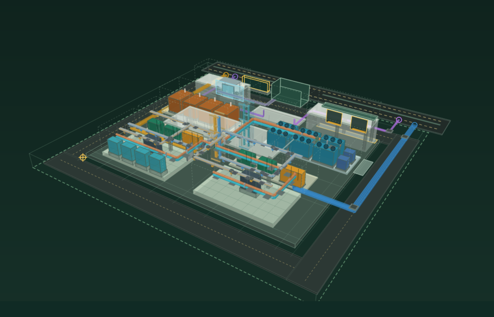

สมุดทดลอง / 01 อาคารหนึ่งหลัง ข้อมูลหลายมือ
ลองขยับแบบ
แล้วตามดูว่าอะไรเปลี่ยน
คนเรียนลองตั้งคำถาม
คนทำงานลองไล่เหตุผล
เริ่มจากเรื่องที่คุ้น แล้วค่อยเปิดรายละเอียด

หมุนโมเดล / เลือกชิ้นส่วน ↗ภาพจาก scene ของเครื่องมือ · โมเดลประกอบการเรียนรู้ ไม่ใช่แบบพร้อมก่อสร้าง
วันนี้อยากลองเรื่องไหน?
03 / งานดูแลอาคาร
อุปกรณ์ต้องเข้าซ่อม
ใครเข้าพื้นที่ได้?
มีใบงานอย่างเดียวพอไหม? ลองตามคนซ่อมผ่านจุดอนุญาต ตรวจพื้นที่และหน้าที่ ก่อนเริ่มงาน
- เลือกเคสเสียหรือซ่อมตามรอบ
- ดูว่าใครต้องอนุญาตและผ่านจุดไหน
- ลองเปลี่ยนเงื่อนไข แล้วดูสิ่งที่ต้องทบทวน
ไม่ต้องสมัคร · ลองใหม่ได้ · ไม่มีเวลานับถอยหลัง
เริ่มตรงนี้ก็ได้
เปิดคนเดียว ลองกับเพื่อน หรือใช้คุยกับทีม
ห้องไหนควรอยู่ติดกัน?
ลองลากกล่องจัดโซน ดูเส้นเชื่อม และหาว่าทำไมตำแหน่งที่ดูดีอาจใช้งานไม่สะดวก
สนามจัดโซน · เริ่มได้โดยไม่ต้องรู้ศัพท์ BIMเปลี่ยนวัสดุหนึ่งชั้น กระทบอะไรบ้าง?
เปิดชั้นพื้น ผนัง ฝ้า หลังคา façade และทางเข้า ลองข้อเสนอวัสดุ แล้วตามสิ่งที่ต้องตรวจร่วมกัน
สถาปัตย์ · สเปค · ทิศ แดด ลม ฝนเอกสารครบแล้ว ทำไมยังรับงานไม่ได้?
ลองสวมบทผู้ส่งหลักฐานและผู้รับงาน เปลี่ยน revision แล้วดูว่าข้อสรุปเดิมยังใช้ได้หรือเปล่า
ส่งต่องาน · หลักฐาน · ความรับผิดชอบสำหรับไล่รายละเอียดต่อ
ของอยู่ไหน
ข้อมูลอยู่กับใคร
เริ่มจากชิ้นส่วนในโมเดล หรือเปิดทะเบียนเพื่อตามชื่อไฟล์ ฝ่าย และ revision ได้โดยตรง
ยังไม่คุ้นกับการจัดการไฟล์? ลอง Basic CDE Lab →- ทะเบียนไฟล์ / ชุดส่ง ↗
- ใครสร้าง อ้างฉบับไหน ส่งต่อไปที่ใด
- คำขอสิทธิ์ ↗
- ขออ่านได้เท่าไร ใครพิจารณา และหมดอายุเมื่อไร
- อุปกรณ์ / ส่งมอบ / Twin ↗
- ข้อมูลพร้อมใช้หรือยัง และเชื่อถือค่าไหนได้บ้าง
- ผลกระทบ / Risk / ROI ↗
- เปิดสมมติฐานดู ไม่ใช่ยอดประหยัดจากโครงการจริง
- เสีย / PM / เข้าซ่อม ↗
- OPS / WORK CONTROL · เส้นทางคนและการอนุญาต
14 ช่วงงาน · 237 รายการไฟล์ · 19 service assemblies · 42 ประเด็นตัดสินใจ
12 MW IT เป็นสมมติฐานของโจทย์ ไม่ใช่กำลังที่พิสูจน์จากโมเดลนี้
ก่อนนำไปใช้อ้างอิง
บริษัท อาคาร อุปกรณ์ สเปค และเหตุการณ์เป็นข้อมูลสมมติ โมเดลสร้างจาก scene ส่วน IFC ดาวน์โหลดเป็น identity proxy แยกชุด สลับบทบาทได้เอง จึงไม่มีการยืนยันตัวตนหรือสิทธิ์อนุมัติจริง ไม่เชื่อม ACC, BMS หรือ OT และไม่มีการรับรอง Tier หรือความถูกต้องของแบบวิศวกรรม
อ่านขอบเขต ข้อจำกัด และแจ้งข้อแก้ไข →